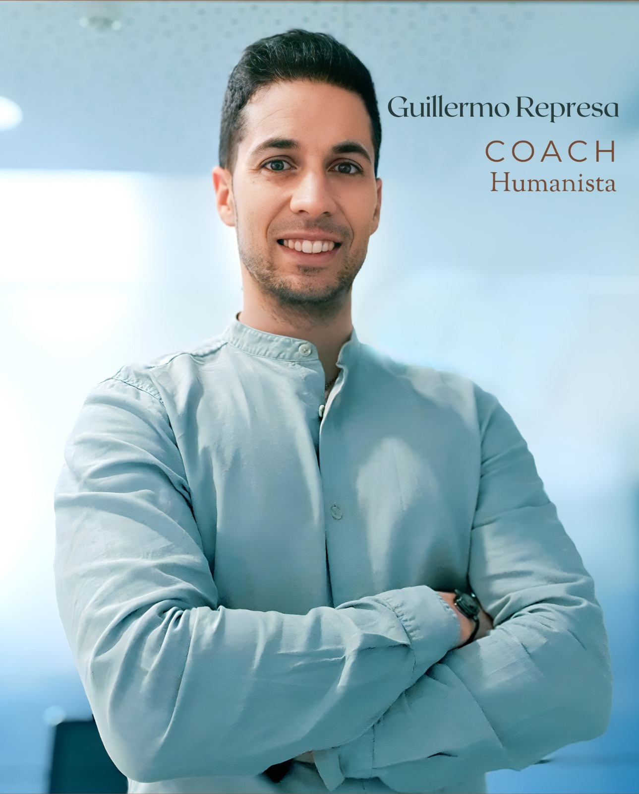
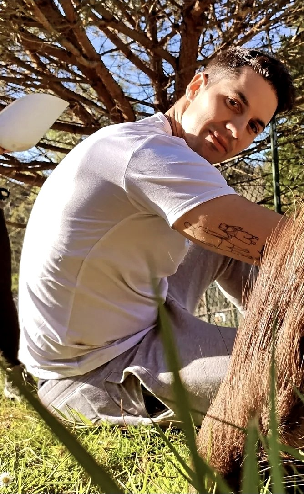

Vamos al problema concreto
No te voy a decir que "todo pasa por algo" ni a mandarte afirmaciones positivas. Identificamos qué te está pasando realmente, sin rodeos ni discursos vacíos.
Coaching para personas que se sienten bloqueadas en sus decisiones, en sí mismas o en sus relaciones, y quieren volver a tener claridad y avanzar.
Autoestima, relaciones de pareja, autoexigencia, estrés y proyectos personales.

Soy Guillermo Represa, coach personal con enfoque humanista. Trabajo con personas que desde fuera funcionan bien, aunque por dentro están atrapadas en bucles de pensamiento, autoexigencia y emociones que no terminan de gestionar.
Mi enfoque no es motivacional. No creo en los discursos de superación ni en las técnicas que suenan bien y que no cambian nada. Lo que hago es acompañarte a ver con claridad qué está pasando, interrumpir lo que no funciona y construir algo diferente desde ahí.
Acompaño a personas que necesitan parar, entender lo que les ocurre y reencontrarse consigo mismas. Procesos relacionados con autoestima, relaciones de pareja, autoexigencia, estrés o bloqueos personales, trabajados desde un enfoque humano, cercano y personalizado.
Trabajar conmigo requiere predisposición real al cambio. Te cuento honestamente cuándo tiene sentido y cuándo no, antes de que inviertas tu tiempo.
Si sabes que necesitas un cambio, quizá este sea el momento de dar el paso.
Mi forma de trabajar no se basa en técnicas prefabricadas. Sigue un proceso claro y adaptable a lo que necesitas en cada momento.
Cada proceso es confidencial y completamente personalizado. Primero analizamos tu situación y valoramos si realmente puedo apoyarte. Y si considero que este espacio no es lo que necesitas, seré claro contigo desde el principio.

No te voy a decir que "todo pasa por algo" ni a mandarte afirmaciones positivas. Identificamos qué te está pasando realmente, sin rodeos ni discursos vacíos.
Los patrones mentales y emocionales que te bloquean tienen estructura. Cuando los ves con claridad, dejan de ser un caos invisible y se vuelven algo concreto sobre lo que actuar.
Trabajamos para interrumpir la dinámica que se repite. No tapamos el síntoma con motivación: cambiamos la lógica desde la que estás operando.
Cada sesión termina con algo accionable: una decisión, un paso o una forma diferente de mirar la situación. No insights bonitos que se evaporan.
Testimonios verificados de personas que han completado un proceso de coaching conmigo. Valoración media: 5,0 sobre 5.
Me ayudó mucho su forma de tratarme y tratar las situaciones en todas las sesiones. Agradezco su sinceridad, paciencia, guía y la preparación previa que hacía de todas las sesiones. Las tareas personales que me indicaba me sorprendieron y me ayudaron mucho.
Fui con un objetivo profesional y personalmente vi cosas que no había visto antes en mí mismo. Guillermo no opinaba de mis actos o ideas, pero sí me ayudaba a encontrar los motivos para llevarlas a cabo.
A calma que transmitia para mim foi essencial em todo o processo. A forma como me guiou para me conhecer a mim própria não tenho outra palavra a não ser incrível. Fez de mim uma pessoa diferente.
Lo que más valoro es su capacidad para comprender. Salía aliviada de cada sesión, con la sensación de que algo se había movido por dentro sin que me hubiera dado cuenta del cómo.
Guillermo es una persona que cuida cada detalle y muy organizado. Salí del proceso motivado, reflexivo y con paz interior. Recomendaría sin dudar trabajar con él.
Llegué con cierta tensión y salía tranquilo de cada sesión. Lo que más valoré fue la empatía y la cercanía sin perder profesionalidad.
30 minutos, presencial (Valladolid, Llanes o Madrid) u online por videollamada. Me cuentas dónde estás atascado, vemos si tiene sentido trabajar juntos. Sin compromiso, sin venta.
Reservar por WhatsApp